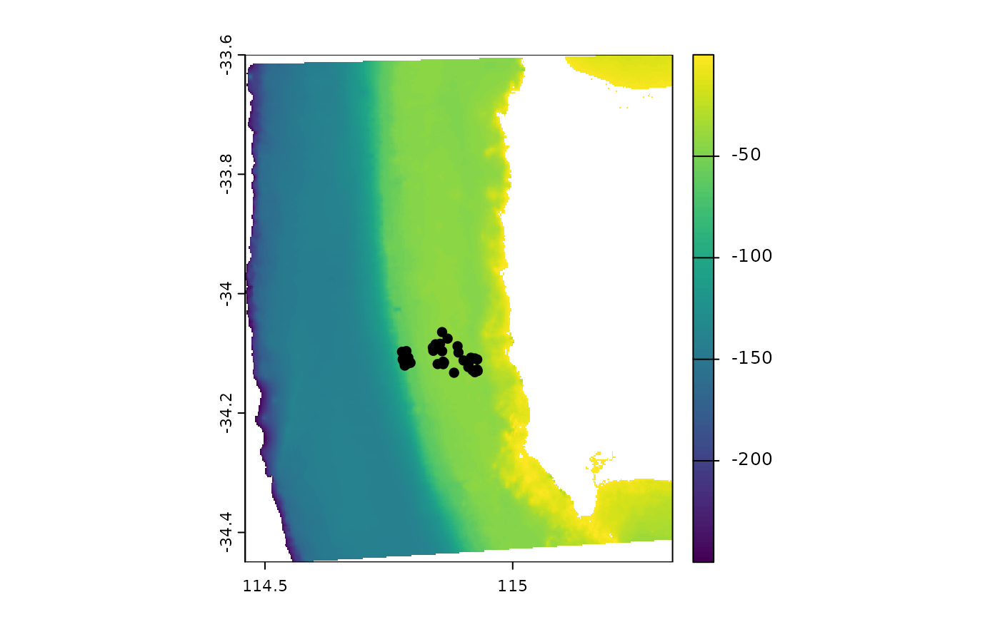

Generate spatial layers for modelling
Claude Spencer & Brooke Gibbons
2023-11-13
spatial-layers.RmdLoad bathymetry data and create bathymetry derivatives
The bathymetry data used in the example is a relatively low spatial resolution dataset downloaded from https://ecat.ga.gov.au/geonetwork/srv/eng/catalog.search#/metadata/148758. Feel free to replace with any suitable bathymetry in .tif format.
bathy <- rast(here::here("r-workflows/data/spatial/rasters/swc_ga250m.tif")) %>%
clamp(upper = 0, lower = -250, values = F) %>%
trim()Calculate terrain derivatives.
preds <- terrain(bathy, neighbors = 8,
v = c("slope", "aspect", "TPI", "TRI", "roughness"), # Remove here as necessary
unit = "degrees")Calculate detrended bathymetry.
zstar <- st_as_stars(bathy)
detre <- detrend(zstar, parallel = 8)
detre <- as(object = detre, Class = "SpatRaster")
names(detre) <- c("detrended", "lineartrend")Join bathymetry with terrain and detrended derivatives.
Save spatial-layers.
Load metadata and extract site-specific derivatives
Read in the metadata.
metadata <- readRDS(here::here(paste0("r-workflows/data/tidy/",
name, "_metadata.rds"))) %>%
dplyr::mutate(longitude_dd = as.numeric(longitude_dd),
latitude_dd = as.numeric(latitude_dd)) %>%
glimpse()## Rows: 94
## Columns: 12
## $ campaignid <chr> "2022-05_PtCloates_stereo-BRUVS", "2022-05…
## $ sample <chr> "1", "2", "3", "4", "5", "6", "7", "8", "9…
## $ longitude_dd <dbl> 113.5447, 113.5628, 113.5515, 113.5555, 11…
## $ latitude_dd <dbl> -22.7221, -22.6957, -22.7379, -22.7337, -2…
## $ date_time <chr> "2022-05-22T10:03:24+08:00", "2022-05-22T1…
## $ location <chr> NA, NA, NA, NA, NA, NA, NA, NA, NA, NA, NA…
## $ site <chr> NA, NA, NA, NA, NA, NA, NA, NA, NA, NA, NA…
## $ depth_m <chr> "93.9", "77.3", "78.3", "73.9", "81.9", "7…
## $ successful_count <chr> "Yes", "Yes", "Yes", "Yes", "Yes", "Yes", …
## $ successful_length <chr> "Yes", "Yes", "Yes", "Yes", "Yes", "Yes", …
## $ successful_habitat_forward <chr> NA, NA, NA, NA, NA, NA, NA, NA, NA, NA, NA…
## $ successful_habitat_backward <chr> NA, NA, NA, NA, NA, NA, NA, NA, NA, NA, NA…Convert the metadata to a spatial file.
Check to see if the metadata and bathymetry align correctly.
 Add the latitude and longitude coordinates back into the metadata.
tidy.metadata_t <- as.data.frame(metadata.vect, geom = "XY") %>%
left_join(metadata)## Joining with `by = join_by(campaignid, sample, date_time, location, site,
## depth_m, successful_count, successful_length, successful_habitat_forward,
## successful_habitat_backward)`Extract the bathymetry derivatives at each sampling location.
metadata.bathy.derivatives <- cbind(tidy.metadata_t,
terra::extract(preds, metadata.vect)) %>%
dplyr::filter(!is.na(depth),
!is.na(roughness)) %>%
glimpse()## Warning: There was 1 warning in `dplyr::filter()`.
## ℹ In argument: `!is.na(depth)`.
## Caused by warning in `is.na()`:
## ! is.na() applied to non-(list or vector) of type 'closure'## Rows: 32
## Columns: 22
## $ campaignid <chr> "2023-03_SwC_stereo-BRUVs", "2023-03_SwC_s…
## $ sample <chr> "35", "5", "26", "23", "29", "4", "32", "3…
## $ date_time <chr> "14/03/2023 23:36", "14/03/2023 23:49", "1…
## $ location <chr> NA, NA, NA, NA, NA, NA, NA, NA, NA, NA, NA…
## $ site <chr> NA, NA, NA, NA, NA, NA, NA, NA, NA, NA, NA…
## $ depth_m <chr> "39.6", "42.7", "36", "41", "42.6", "45", …
## $ successful_count <chr> "Yes", "Yes", "Yes", "Yes", "Yes", "Yes", …
## $ successful_length <chr> "Yes", "Yes", "Yes", "Yes", "Yes", "Yes", …
## $ successful_habitat_forward <chr> "Yes", "Yes", "Yes", "Yes", "Yes", "Yes", …
## $ successful_habitat_backward <chr> "Yes", "Yes", "Yes", "Yes", "Yes", "Yes", …
## $ x <dbl> 114.9236, 114.9292, 114.9284, 114.9190, 11…
## $ y <dbl> -34.13155, -34.12953, -34.12729, -34.12832…
## $ longitude_dd <dbl> 114.9236, 114.9292, 114.9284, 114.9190, 11…
## $ latitude_dd <dbl> -34.13155, -34.12953, -34.12729, -34.12832…
## $ ID <dbl> 63, 64, 65, 66, 67, 68, 69, 70, 71, 72, 73…
## $ mbdepth <dbl> -34.97151, -36.35807, -40.68553, -38.25594…
## $ slope <dbl> 0.146843375, 0.812689749, 0.694289634, 0.4…
## $ aspect <dbl> 209.89577, 62.41434, 40.87387, 294.10675, …
## $ TPI <dbl> 0.42153454, 2.39535522, -0.67607403, 0.476…
## $ TRI <dbl> 0.75557327, 3.29823494, 2.39221191, 1.8367…
## $ roughness <dbl> 2.21119308, 8.36493301, 8.36493301, 5.3012…
## $ detrended <dbl> -5.6631737, -7.0394716, -11.2637815, -8.69…